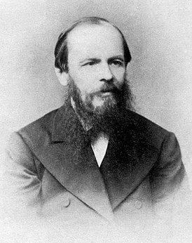

Достоевский Фёдор Михайлович

11 ноября 1821 — 9 февраля 1881
Вошь ли я, как все, или человек? Тварь ли я дрожащая, или право имею…
Достоевский Ф.М. «Преступление и наказание»
В начале своего литературного творчества молодой Достоевский скорее страдал от избытка замыслов и сюжетов, чем от недостатка материала.
Сочинения первого периода творчества Достоевского принадлежали различным жанрам:
- юмористического рассказа — «Роман в девяти письмах» (создан в 1845 году, издан в 1847 году)
- физиологического очерка — фельетоны «Петербургской летописи» (1847)
- рассказа — «Господин Прохарчин» (1846), «Ползунков» (1848), «Честный вор» (1848)
- трагикомического рассказа — «Чужая жена» и «Ревнивый муж» опубликованы как два отдельных рассказа в 1848 году, а для издания первого двухтомного собрания сочинений 1860 года были объединены под названием «Чужая жена и муж под кроватью»
- святочного рассказа — «Ёлка и свадьба» (1848)
- повести — «Хозяйка» (1847), «Слабое сердце» (1848), «Белые ночи» (1848)
- романа — эпистолярный роман «Бедные люди» (1846); «Неточка Незванова» создавалась в 1848—1849 годах как роман воспитания, который не был закончен из-за ареста, впоследствии переделан в повесть, изданную в 1866 году
В Алексеевском равелине Достоевский написал рассказ «Маленький герой» (1849). Многие творческие начинания и замыслы молодого писателя нашли своё более широкое воплощение в его последующем творчестве. Лучшим произведением этого периода признан роман «Бедные люди»
К наиболее значительным произведениям писателя литературоведы относят уникальный в русской и мировой литературе моножурнал философско-литературной публицистики «Дневник писателя» и так называемое «великое пятикнижие», в которое входят последние романы:
- «Преступление и наказание» (1866)
- «Идиот» (1868)
- «Бесы» (1871—1872)
- «Подросток» (1875)
- «Братья Карамазовы» (1879—1880)
Наш русский либерал прежде всего лакей и только и смотрит, как бы кому-нибудь сапоги вычистить.
Достоевский Ф.М. «Бесы»